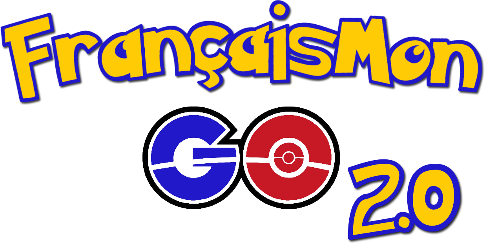

For the last chapter of FRE1121 (Beginning French II), I decided to present the content in a completely different way. Rather than having regular lessons and homework, I constructed the alternate reality game (ARG), FrançaisMon GO. To integrate it into our existing curriculum, I restructured the three week unit as follows:Class Sessions
- Each of the six class sessions became an "episode."
- In class, I focused on communicative activities that reviewed and practiced content in the context of an unfolding narrative.
- Between classes, homework was re-framed as "training" and incorporated flipped classroom elements. See Grading for details.
- More than just cover the language content, the at home activities progressed the narrative. Finishing all of the activities would provide students with a clue or story element that would be necessary to continue the story in the next class session's first activity.
- If a student missed class, all of the content and activities were recreated on our LMS (D2L) so they could catch up on the story while studying and practicing.
Grading
- As part of their training (homework), students were required to complete three types of activities:
- Review activities that served as additional practice
- Flipped lessons using Edpuzzle
- Simple practice activities that reinforced the flipped lesson content
- The review and practice activities offered three options each for completion (e.g. standard textbook homework through MHConnect, digital review game, quiz, etc.). Students were required to complete at least one of each for grading purposes (three total activities between classes). Additional activities counted as extra credit.
- To maintain our "Proficiency Portfolio" grading structure, the penultimate episode was dedicated to training at five specialized gyms, each focusing on a different language mode. The activities replaced the typical IPA-style assessments at the end of each unit. As before, additional activities counted as extra credit. See Badges for details.
Experience Points
- Completing both in-class and homework activities earned students experience points for their partner Pokémon. After receiving a certain amount of experience points, a student's partner Pokémon leveled up and, at a certain level, a student's partner Pokémon evolved.
- A class leaderboard was posted on D2L where the top five students (by experience points earned) were posted. At the beginning of every class I showed the leaderboard and on the last day rewarded the winner and top five students with prizes.
- Students were able to track their progress using both their physical Trainer Card and their Trainer Profile on our LMS. They could see their current experience points, points to the next level, badges earned, as well as activities completed and/or missing. I tracked all of the data in an Excel spreadsheet and updated all systems between classes.
Teams
- To encourage both collaboration and competition, students were divided into three teams.
- As a student earned experience points, their points were added to their team score. As with individual students, a team leaderboard was also created and a prize awarded to the winning team at the conclusion of the game.
- Some class activities had students working with their own team, while others had them form new groups with one member from each team.
- Certain homework activities also had branching narratives depending on the student's team. When they returned to the next class, each team would provide a different clue or piece of information needed for the day's first activity.
Badges
- When training at a gym, students could earn badges upon the completion of an activity.
- There were six different badges - one for each of the five gyms, plus a sixth for completing at least one activity from each gym.
- Each badge had three tiers - bronze, silver, and gold. Completing one activity at a gym earned a bronze badge, two activities, a silver, and three, a gold.
- Earned badges appeared on a student's Trainer Card as well as their Trainer Profile.
Episode Outline
Episode 1 |
Episode 2 |
Episode 3 |
|
|
|
Episode 4 |
Episode 5 |
Episode 6 |
|
|
|